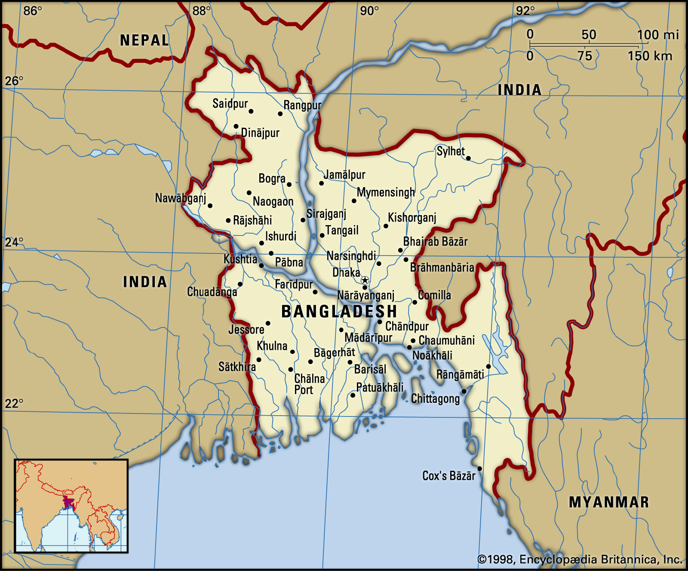
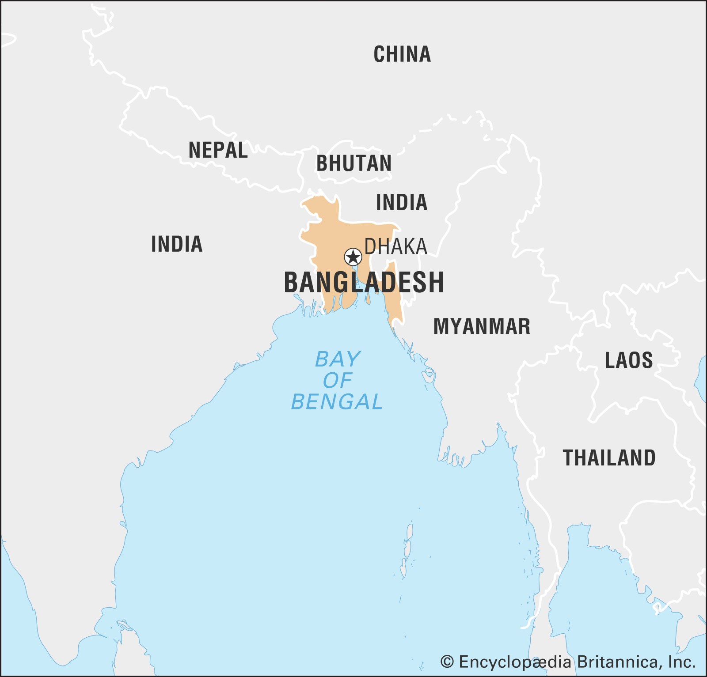
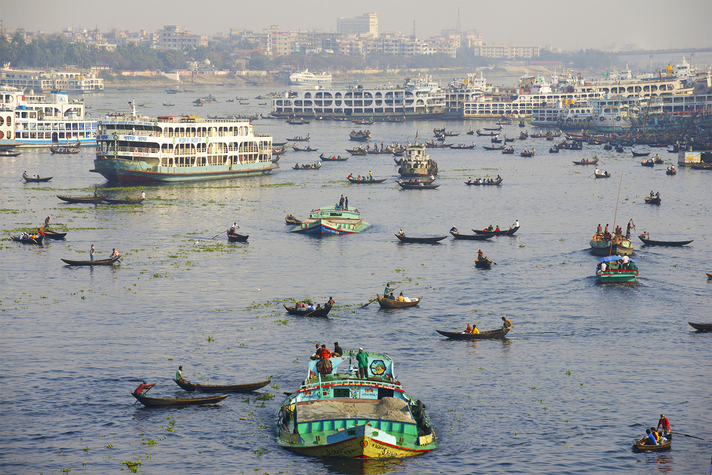
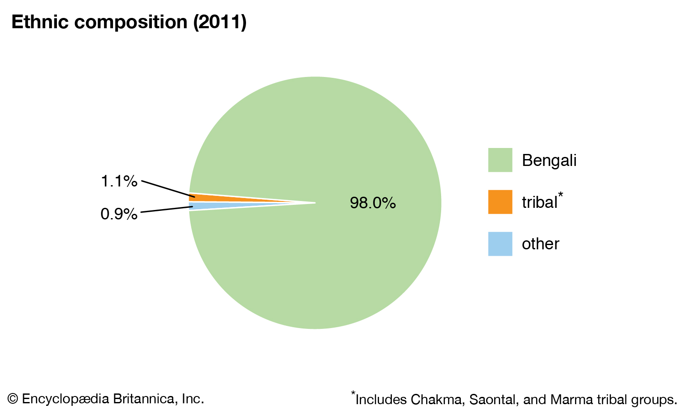

Bangladesh, country of South Asia, located in the delta of the Padma (Ganges [Ganga]) and Jamuna (Brahmaputra) rivers in the northeastern part of the Indian subcontinent. See here more in britannica.
The riverine country (list of rivers in Bangladesh) of Bangladesh (“Land of the Bengals”) is one of the most densely populated countries in the world, and its people are predominantly Muslim. As the eastern portion of the historical region of Bengal, the area once formed, along with what is now the Indian state of West Bengal, the province of Bengal in British India. With the partition of India in 1947, it became the Pakistani province of East Bengal (later renamed East Pakistan), one of five provinces of Pakistan, separated from the other four by 1,100 miles (1,800 km) of Indian territory. In 1971 it became the independent country of Bangladesh, with its capital at Dhaka.
Bangladesh is bordered by the Indian states of West Bengal to the west and north, Assam to the north, Meghalaya to the north and northeast, and Tripura and Mizoram to the east. To the southeast, it shares a boundary with Myanmar (Burma). The southern part of Bangladesh opens into the Bay of Bengal.
Stretching northward from the Bay of Bengal, Bangladesh constitutes roughly the eastern two-thirds of the deltaic plain of the Padma (Ganges [Ganga]) and Jamuna (Brahmaputra) rivers. Except for small higher areas of jungle-covered old alluvium (rising to about 100 feet [30 metres]) in the northwest and north-centre—in the Barind and the Madhupur Tract, respectively—the plain is a flat surface of recent alluvium, having a gentle slope and an elevation of generally less than 30 feet (9 metres) above sea level. In the northeast and southeast—in the Sylhet and Chittagong Hills areas, respectively—the alluvial plains give place to ridges, running mainly north-south, that form part of the mountains that separate Bangladesh from Myanmar and India. In its southern region, Bangladesh is fringed by the Sundarbans, a huge expanse of marshy deltaic forest.
The most significant feature of the Bangladesh landscape is provided by the rivers, which have molded not only its physiography but also the way of life of the people. Rivers in Bangladesh, however, are subject to constant and sometimes rapid changes of course, which can affect the hydrology of a large region; consequently, no description of Bangladesh’s topography retains its absolute accuracy for long. One spectacular example of such a change occurred in 1787, when the Tista River underwent exceptionally high flooding; its waters were suddenly diverted eastward, where they reinforced the Brahmaputra. The swollen Brahmaputra in turn began to cut into a minor stream, which by the early 1800s had become the river’s main lower course, now known as the Jamuna. A much smaller river (the Old Brahmaputra) now flows through the Brahmaputra’s former course.
Each year between June and October, the rivers overflow their banks and inundate the countryside, rising most heavily in September or October and receding quickly in November. The inundations are both a blessing and a curse. Without them, the fertile silt deposits would not be replenished, but severe floods regularly damage crops and ruin hamlets and sometimes take a heavy toll on human and animal populations. The rivers may be divided into five systems: (1) The Padma (or Ganges) and its deltaic streams, (2) the Meghna and the Surma river system, (3) the Jamuna and its adjoining channels, (4) the North Bengal rivers, and (5) the rivers of the Chittagong Hill Tracts and the adjoining plains. The greater Ganges is the pivot of the deltaic river system of the historical region of Bengal. The greater Ganges Delta covers some 23,000 square miles (60,000 square km), the bulk of it in southwestern Bangladesh. The Ganges in Bangladesh is known as the Padma, and it is divided into two segments, the upper Padma and the lower Padma. The river enters Bangladesh from the west and constitutes, for about 90 miles (145 km), the boundary between Bangladesh and West Bengal. As it flows farther into Bangladesh, the upper Padma forms numerous distributaries and spill channels and reaches its confluence with the Jamuna west of Dhaka, after which their combined waters make up the lower Padma—which, from a hydrological perspective, is the Padma proper. The lower Padma flows southeast to join the Meghna near Chandpur and enters the Bay of Bengal through the Meghna estuary and lesser channels. Except where it is confined by high banks, the upper Padma’s main channel changes course every two or three years. Its waters appear muddy owing to the volume of silt carried by the river. Silt deposits build temporary islands that reduce navigability but are so highly fertile that they have been for decades a source of feuds among peasants who rush to occupy them. The Meghna is formed by the union of the Sylhet-Surma and Kusiyara rivers. These two rivers are branches of the Barak River, which rises in the Nagar-Manipur watershed in India. The main branch of the Barak, the Surma, is joined near Azmiriganj in northeastern Bangladesh by the Kalni and farther down by the Kusiyara branch. The Dhaleswari, a distributary of the Jamuna River, joins the Meghna a few miles above the junction of the lower Padma and the Meghna. As it meanders south, the Meghna grows larger after receiving the waters of several rivers, including the Buriganga and the Sitalakhya.
The vast majority of the population of Bangladesh is Bengali—a term describing both an ethnic and a linguistic group. The Bengali people are historically of diverse origin, having emerged from the confluence of various communities that entered the region over the course of many centuries. The Vedda peoples were perhaps the earliest group to settle in the area. According to some ethnologists, they were followed by peoples from the Mediterranean and neighbouring areas, particularly those who spoke Indo-European languages. During the 8th century CE, persons of Arab, Persian, and Turkish origin moved in large numbers to the subcontinent. By the beginning of the 13th century, they had entered what is now Bangladesh. The contention that contemporary Bengali Muslims are all descended from lower-caste Hindus who had converted to Islam, then, is clearly incorrect; a substantial proportion are descendants of Muslims who reached the subcontinent from elsewhere.
Non-Bengalis—consisting primarily of smaller indigenous groups—constitute only a tiny fraction of the population. Most of these peoples inhabit the Chittagong Hill Tracts in the southeast, the most sparsely settled area of the country. Some of the groups are related to the peoples of Myanmar (Burma), and many follow Buddhism, although both Hinduism and Christianity also have a significant following. Of the dozen or so ethnolinguistic groups of the Chittagong Hill Tracts, the largest are the Chakma, the Marma (Magh or Mogh), the Tripura (Tipra), and the Mro; the Khomoi (Kumi), the Kuki, and the Mizo (formerly called Lushai) are among the smaller groups. Since the mid-1970s ethnic tensions and periodic violence have marked the Chittagong Hill Tracts, where many peoples long resident in the area have objected to the influx of Muslim Bengali settlers. Indigenous minority peoples in other parts of Bangladesh include the Santhal, the Khasi, the Garo, and the Hajang. The Santhal peoples live in the northwestern part of Bangladesh, the Khasi in Sylhet in the Khasi Hills near the border with Assam, India, and the Garo and Hajang in the northeastern part of the country.